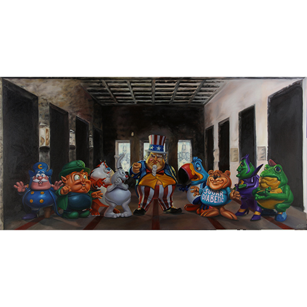

Exhibitions
Sugar High, Dorothy Circus Gallery, Rome, Italy, February 20–March 31, 2016.
English Translation Series, Pop Life Art Space at Q-Plex, Shenzhen, China, June 21–July 14, 2019.
Literature
Ron English, English Translation Series (Dongguan City, Guangdong, PRC: PopLife GLOBAL, n.d.), p. 34.
Ron English, Original Grin: The Art of Ron English (Paris: Cernunnos, 2019), p. 257. ISBN 978-2374950938.
Notes
The work is documented in the printed exhibition booklet English Translation Series.
In the exhibition catalogue English Translation Series, this work was erroneously dated 2019.
The work is documented on Dorothy Circus Gallery’s dedicated exhibition object page for Uncle scam's last breakfast, under RON ENGLISH: Sugar High, accessed April 5, 2026.